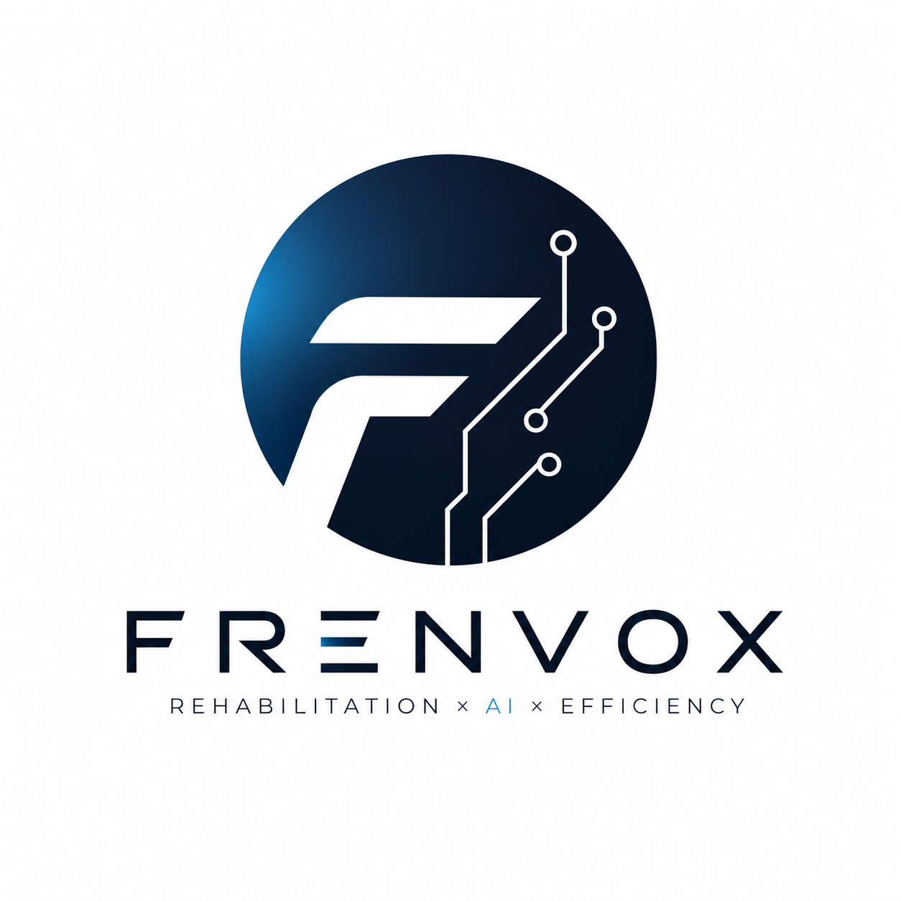
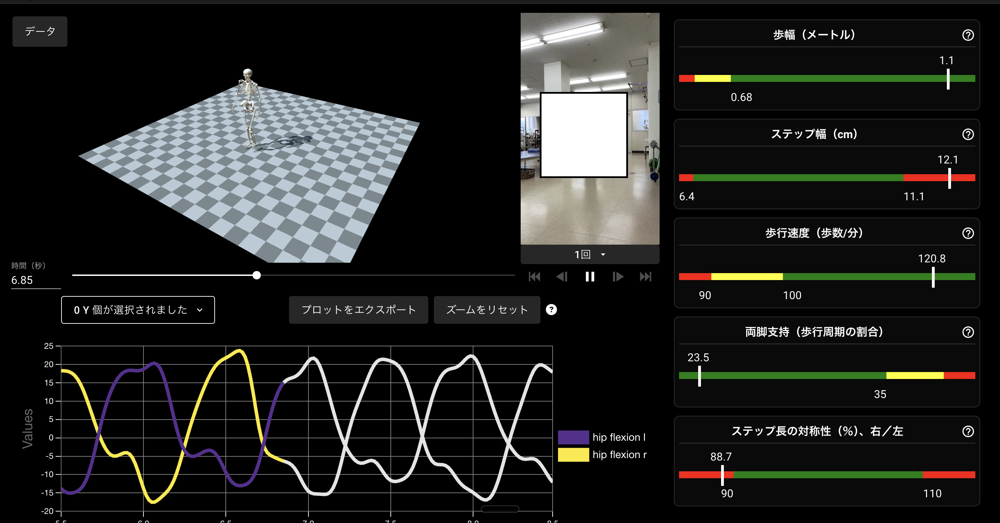

理学療法士 × AI ／ 出張・パーソナル身体評価国家資格を持つ理学療法士とAIが、ご自宅へ伺い全身を計測。
「今日から何を・どれだけやればいいか」を、2枚のレポートで具体的にご提案します。
健康増進・コンディショニングサービス（医療行為ではありません）。

QRコード → 予約ページ（frenvox.jp）で内容確認・カレンダー予約。
担当者の顔・経歴・実績は frenvox.jp に掲載しています。
kaito@frenvox.jp ／ 080-4343-2366 ／ frenvox.jp
FRENVOX（フレンボックス）／代表・理学療法士 桑島 海斗 ／ 香川県高松市 ／ frenvox.jp
本サービスは医療行為ではなく、健康増進・予防のためのコンディショニング／運動サポートです（診断・治療は行いません）。AIは評価の可視化・運動提案の補助（非医療機器）で、最終的な提案は理学療法士が行います。効果には個人差があります。痛みが強い等は医療機関にご相談ください。